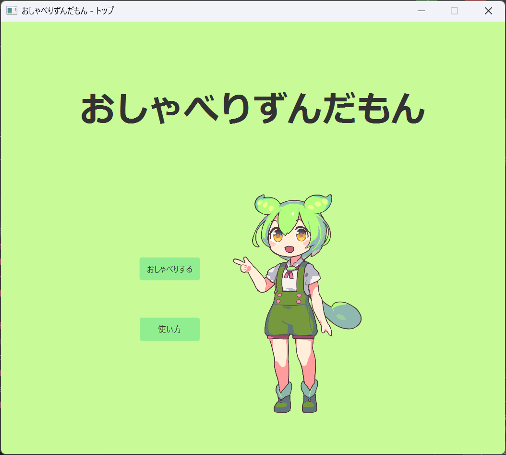

Java

※画像をタップするとデモ動画が再生されます
JavaFXで開発したずんだもんとのチャットアプリです。VOICEVOXとGemini APIを組み合わせ、ユーザーの質問にずんだもんが音声で答えます。感情に応じて表情が変わり、音声に合わせて文字が表示されていくため、本当にずんだもんと話しているような感覚になります。
制作期間は約1ヶ月です。VOICEVOXがローカルサーバーを立ち上げてリクエストを受け付け、音声を合成できると知ったのがきっかけでした。ただそれだけではアプリになりません。ハッカソンで見たGemini APIと掛け合わせれば、ずんだもんと疑似的に会話できると考えました。寂しさを感じる人を減らしたい、幅広い層にずんだもんを知ってもらいたいという思いで作りました。
個人開発 フロントエンド、API連携、音声処理をすべて担当
| Java (JavaFX) |
| VOICEVOX API 音声合成 |
| Gemini API AI対話生成 |
| Gson JSON処理 |
| マルチスレッド処理 |
音声合成と解答生成には時間がかかります。メインスレッドだけで処理するとアプリが固まって見えてしまいます。マルチスレッド処理を実装し、処理中も頻繁にウィジェットを更新することでユーザーを不安にさせないようにしました。JavaFXはウィジェットの更新を必ずメインスレッドで行う必要があり、戻り値を持つスレッド間の連携方法を調べながら実装したのは本当に苦労しました。
Gemini APIから解答と感情という複数の情報を受け取るため、JSON形式で返答させるよう設定しました。複雑な情報をJavaで扱うにはこれが最適だと判断しました。
APIキーはパスワードと同じで他人に知られてはいけません。プログラムに直接書き込むのは抵抗があったため、.envファイルから参照する仕組みを作りました。
感情ごとに画像を切り替え、考え中は考えている画像を表示するなど細かい演出にこだわりました。音声の長さに合わせて徐々に文字を出力することで、ずんだもんが実際に話しているような演出を実現できました。